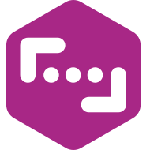
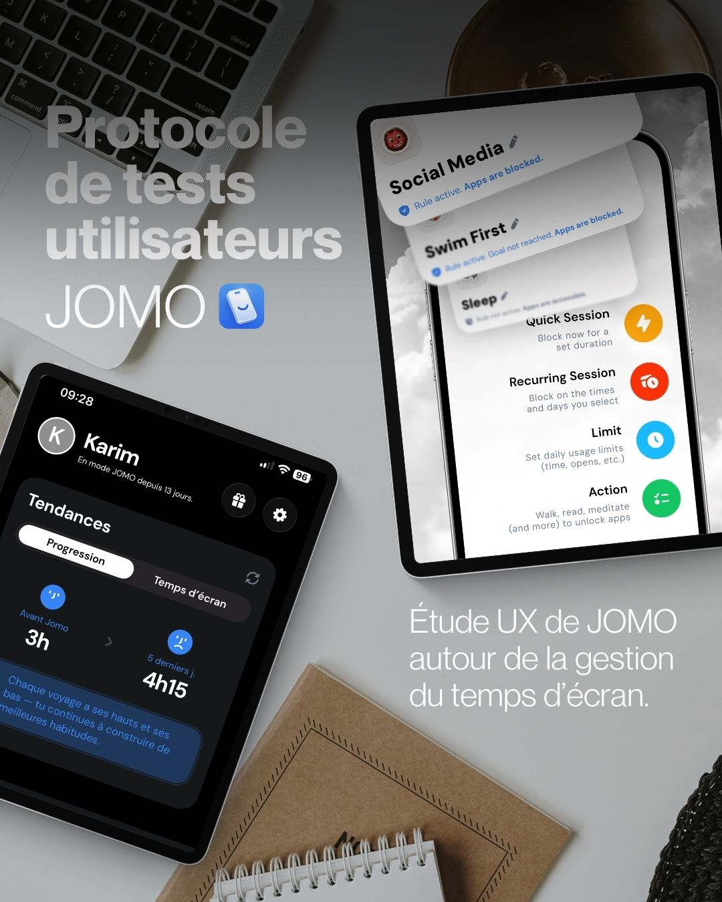

JOMO – Tests utilisateurs & protocole
Application de gestion du temps d’écran – protocole de tests auprès d’étudiants
Objectifs : concevoir et mettre en place un protocole de tests utilisateurs pour évaluer l’utilisabilité et l’expérience de l’application JOMO, et identifier ses points forts et axes d’amélioration autour des règles de blocage et de la gestion du temps d’écran.
Rôle : UX researcher (co‑conception du protocole, préparation des tests, analyse à venir).
Missions : rédaction d’un protocole de test (contexte, méthode, panel), définition de 8 scénarios couvrant différents moments de vie d’étudiants (installation, concentration, statistiques, Mode Strict, budgets, dimension sociale), préparation d’un questionnaire pré‑test pour sélectionner les profils les plus pertinents, et organisation de sessions filmées de tests utilisateurs avant analyse et recommandations aux fondateurs de JOMO.
Outils :

